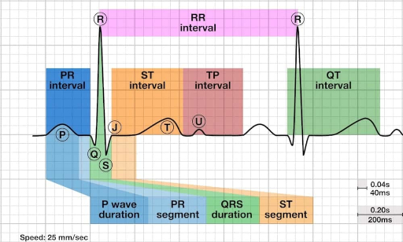
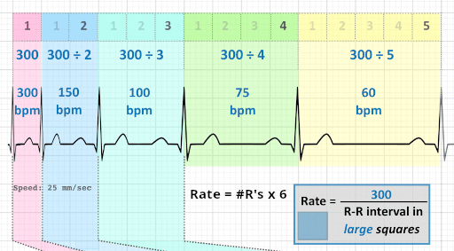
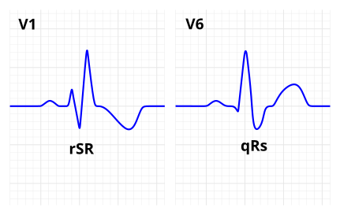
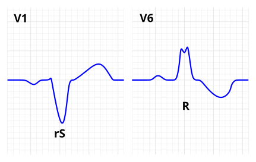

Chest pressure, squeezing, heaviness, tightness, or pain
Pain radiating to the arm, shoulder, neck, jaw, back, or epigastrium
Dyspnea
Diaphoresis
Nausea or vomiting
Lightheadedness, presyncope, or syncope
Palpitations
Sudden weakness or unusual fatigue
Acute anxiety or a sense of impending doom
Hypotension or signs of shock
New pulmonary edema or acute heart failure
Cardiac arrest
flowchart TD
A["New, changed, or unexplained acute chest pain"] --> B{"High-risk presentation?"}
B -->|"Yes"| C["Call EMS"]
B -->|"No"| D["Focused history, examination, vitals, and ECG"]
D --> E{"Acute ischemic or occlusion-pattern ECG?"}
E -->|"Yes"| C
E -->|"No"| F{"Clearly noncardiac explanation?"}
F -->|"No"| H["Apply clinical risk assessment Consider INTERCHEST"]
H --> I{"ACS suspicion after assessment"}
I -->|"Meaningful suspicion"| C
I -->|"Low suspicion"| G
F -->|"Yes"| G["Treat or evaluate outpatient"]
ECG Findings Requiring Urgent Action
ECG pattern
Key appearance
Action
Standard STEMI
ST elevation at the J point in ≥2 contiguous leads,
meeting the thresholds below
Call EMS; activate STEMI pathway
Posterior coronary occlusion
ST depression in V1–V3, often horizontal, with tall
R waves and upright T waves; confirm with V7–V9
Call EMS; emergent evaluation
LBBB or ventricular-paced rhythm meeting modified Sgarbossa criteria
Concordant ST elevation, concordant ST depression in
V1–V3, or proportionally excessive discordant ST elevation
Call EMS; emergent evaluation
Other acute coronary occlusion pattern
De Winter pattern, regional hyperacute T waves, or dynamic
ST changes with reciprocal changes
Call EMS; urgent expert interpretation
Regional or dynamic ischemic changes
New horizontal or downsloping ST depression and/or
regional T-wave inversion without STEMI criteria
Send to ED for serial ECGs and troponins
Diffuse ST depression with ST elevation in aVR
Pattern of widespread subendocardial ischemia; consider
severe coronary disease or supply–demand mismatch
Send to ED; assess urgently for instability
Normal or nondiagnostic ECG
No definite acute ischemic changes
Does not exclude ACS; send to the ED if ACS remains
clinically plausible
Standard STEMI Thresholds
New ST elevation measured at the J point in≥2 anatomically contiguous leads:
Affected contiguous leads
Required elevation in each lead
Any contiguous lead pair not involving V2–V3
≥1 mm
V2–V3 in men ≥40 years
≥2 mm
V2–V3 in men <40 years
≥2.5 mm
V2–V3 in women of any age
≥1.5 mm
Assumes standard ECG calibration of 10 mm/mV. These thresholds
are less reliable when LVH, LBBB, or ventricular pacing distorts
ventricular repolarization.
EKG Interpretation
Rate
Rhythm
Regular/Irregular?
Narrow/Wide?
Morphology
Axis
Bundle Branches
QRS Morphology
Pathologic Q-Waves?
RVH?
LVH?
ST Segment
T-Waves
QTc
Limb Leads
ILateral
aVRRightward view
IIInferior
aVLHigh lateral
IIIInferior
aVFInferior
Precordial Leads
V1Septal / right ventricular
V4Anterior
V2Septal
V5Lateral
V3Anterior
V6Lateral
ECG Anatomy

Q wave: the first negative deflection before any positive deflection
R wave: the first positive deflection.
S wave: the first negative deflection after an R wave.
ECG component
Normal duration
Small boxes
Large boxes
P wave
< 0.12 seconds
< 3
< 0.6
PR interval
0.12–0.20 seconds
3–5
0.6–1
QRS complex
< 0.12 seconds
< 3
< 0.6
QTc
< 0.45 seconds in men
< 0.46 seconds in women
< 11.25 in men
< 11.5 in women
< 2.25 in men
< 2.3 in women
Rate

Rhythm
Regular R-R, Narrow QRS
flowchart TD
A["Regular R–R Narrow QRS"] --> B{"P–QRS relationship"}
B -->|"Sinus P before every QRS"| C{"PR interval"}
C -->|"Over 200 ms"| D["1st-degree AV block"]
C -->|"200 ms or less"| E{"Rate"}
E -->|"Under 60"| F["Sinus bradycardia"]
E -->|"60–100"| G["Normal sinus rhythm"]
E -->|"Over 100"| H["Sinus tachycardia"]
B -->|"P and QRS dissociated"| I["3rd-degree AV block with junctional escape"]
B -->|"More P waves than QRS"| J{"Sawtooth flutter waves?"}
J -->|Yes| K["Atrial flutter with fixed conduction"]
J -->|No| L["Fixed-ratio AV block such as 2:1 block"]
B -->|"P hidden or retrograde"| M{"Rate"}
M -->|"40–60"| N["Junctional escape rhythm"]
M -->|"Over 100"| O["SVT"]
B -->|"Abnormal P before every QRS"| P{"Rate"}
P -->|"100 or less"| Q["Ectopic atrial rhythm"]
P -->|"Over 100"| R["Atrial tachycardia"]
style D stroke:#7B1FA2,stroke-width:3px
style F stroke:#1565C0,stroke-width:3px
style G stroke:#2E7D32,stroke-width:3px
style H stroke:#EF6C00,stroke-width:3px
style I stroke:#C62828,stroke-width:3px
style K stroke:#00838F,stroke-width:3px
style O stroke:#AD1457,stroke-width:3px
flowchart TD
A["Irregular R–R, narrow QRS"] --> B{"Atrial activity"}
B -->|"No discrete P waves"| C["Atrial fibrillation"]
B -->|"Flutter waves"| D["Atrial flutter with variable block"]
B -->|"Sinus P before every QRS"| E{"R–R pattern"}
E -->|"Gradual respiratory variation"| F["Sinus arrhythmia"]
E -->|"Abrupt pause or missing sinus cycle"| G["Sinus pause or SA exit block"]
B -->|"Early narrow QRS"| H{"Premature P before QRS?"}
H -->|"Yes; different from sinus P"| I["PAC"]
H -->|"No"| K["PJC"]
B -->|"Three or more P morphologies"| M{"Rate"}
M -->|"Over 100"| N["Multifocal atrial tachycardia"]
M -->|"100 or less"| O["Wandering atrial pacemaker"]
B -->|"P waves with dropped QRS"| P{"PR behavior"}
P -->|"Progressively longer, then drop"| Q["Mobitz I"]
P -->|"Constant, then sudden drop"| R["Mobitz II"]
P -->|"Two or more consecutive blocked P waves"| S["High-grade AV block"]
P -->|"Every other P wave blocked"| T["2:1 AV block type often indeterminate"]
style C stroke:#C62828,stroke-width:3px
style F stroke:#2E7D32,stroke-width:3px
style I stroke:#1565C0,stroke-width:3px
style K stroke:#7B1FA2,stroke-width:3px
style N stroke:#AD1457,stroke-width:3px
style O stroke:#00838F,stroke-width:3px
style Q stroke:#EF6C00,stroke-width:3px
style R stroke:#D84315,stroke-width:3px
Atrial Fibrillation (∅P, irreg irreg)
Sinus Arrhythmia (ΔR-R w/breath)
Premature Atrial Complex
Premature Junctional Complex
2nd Degree AV Block (Mobitz I) (PR widening→QRS Drop)
2nd Degree AV Block (Mobitz II) (Reg Irreg, Dropped QRS's)
Wandering Atrial Pacemaker
Regular R-R, Wide QRS
flowchart TD
A["Regular R–R Wide QRS"] --> B{"Rate"}
B -->|"Over 100"| C{"Morphology"}
C -->|"Uniform wide QRS complexes"| D["Monomorphic Ventricular tachycardia"]
C -->|"Sine-wave pattern without separate QRS and T"| E["Ventricular flutter"]
C -->|"Known identical BBB pattern"| F["SVT with aberrancy"]
B -->|"100 or less"| G{"Key feature"}
G -->|"Pacing spikes"| H["Ventricular paced rhythm"]
G -->|"P and QRS dissociated"| I["Third-degree AV block with ventricular escape"]
G -->|"No related P waves; 20–40 bpm"| J["Idioventricular escape rhythm"]
G -->|"No related P waves; 40–100 bpm"| K["Accelerated idioventricular rhythm"]
G -->|"Sinus P before every QRS"| L["Sinus rhythm with bundle-branch block"]
style D stroke:#C62828,stroke-width:3px
style E stroke:#AD1457,stroke-width:3px
Monomorphic VT (Uniform wide QRS, ∅P)
Ventricular Flutter (Sine-wave, ∅P)
Irregular R-R, Wide QRS
flowchart TD
A["Irregular R–R, Wide QRS"] --> B{"Waveform"}
B -->|"Chaotic; no identifiable QRS"| C["Ventricular fibrillation"]
B -->|"Continuously changing QRS axis"| D["Polymorphic VT or torsades"]
B -->|"Irregularly irregular"| E["AF with BBB or pre-excitation"]
B -->|"Mostly normal beats with early wide beats"| F["PVCs"]
B -->|"Sinus P before each QRS"| G{"Pattern"}
G -->|"Gradual respiratory variation"| H["Sinus arrhythmia with BBB"]
G -->|"Intermittent wide premature beats"| I["Ventricular ectopy"]
B -->|"P waves with dropped QRS"| J["Second-degree AV block with BBB"]
B -->|"Three or more P morphologies"| K["MAT or WAP with aberrancy"]
style D stroke:#7B1FA2,stroke-width:3px
Polymorphic Tachycardia (Torsades/Twisted Ribbon)
Asystole (No activity)
QRS Axis
II
Axis
aVF
Normal
Left
Right
Bundle Branch Block
Normal R-Wave Progression
V1: Little R, Tall S
V2-3: R grows, S shrings
V3-4: R becomes larger than S
V5-6: Tall R, Little S
Right Bundle Branch Block
"MaRRoW"
QRS > 120
"M" in V1
"W" in V6

MI symptoms + new RBBB = Go to ED
Left Bundle Branch Block
WiLLiaM
QRS > 120
"W" in V1
"M" in V6"
Left axis deviation
Poor R-Wave Progression

Acute chest pain + new LBBB = Go to ED (possible obsurred MI)